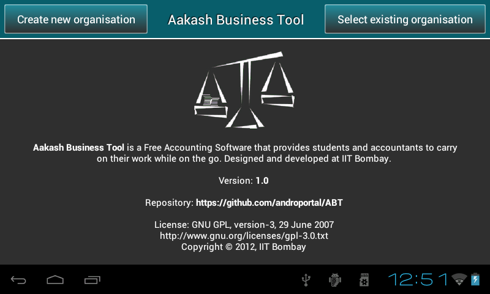
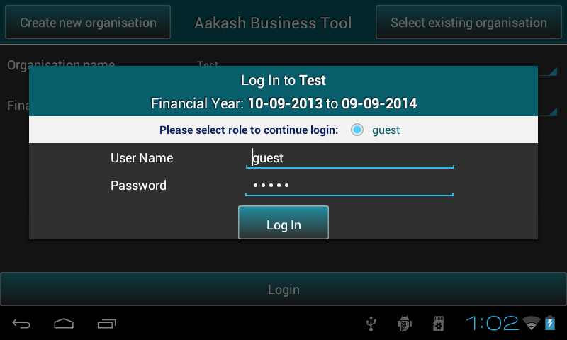
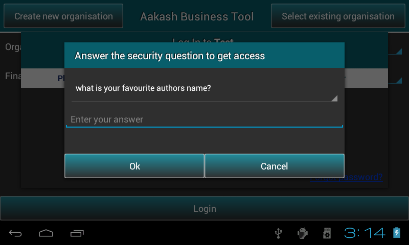
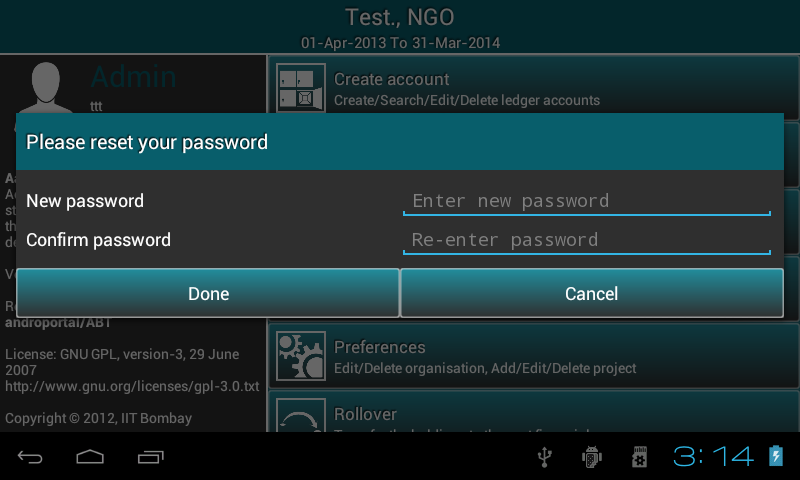

2.1. Maintaining organisations
- It includes creation of organisation and saving organisation details.
2.1.1. Welcome page

- As the application is launched, it automatically checks whether the application is running on emulator or tablet and do all required things.
- To switch to Remote server, user can drag the screen from left to right to find Change server location option.

- On selecting Change server location , it prompts a dialog to enter IP address manually.
It requires a live internet connection, it can be within an organization
or an institute. User can access a centralized remote server running within
the institute. The advantage is, each user will have his/her own
account on the server. The central server runs Sqlite3 as a database engine.

- Click on Ok button.
- There are two options at the top of the screen: Create new organisation and
Select existing organisation.
2.1.2. Setting up a new organisation
- To get started, user need to create aleast one organisation.
- Press Create New Organisation.

- Type the name of organisation.
- Select the organisation type (NGO or Profit Making).
- Specify the Financial Year From and Financial Year To.
- Note: ABT provides 1st April to 31st March as the predefined financial year, But user can change the To date manually according to organization’s rules or requirement. Once the From date is set, To date gets automatically updated by 12 months and minus 1 day.
- Press next to sign up as a user. This will open a dialog where user can select role such as admin or guest.

- Guest user has a default username and password ie. guest.
- If user will select admin, a new pop-up box will appear on the screen to sign up as an admin.
Save details and press Login to continue.

- Fill the organisation details if required else, press Skip.

- Press the Save button to save the organisation details and it will take to ABT’s master menu.
- Note: In both cases,whether the user clicks skip or save organisation will be created .
2.1.3. Select existing organisation
- Press Select New Organisation.
- It will display the list of Organisations.
- Select the required organisation and respective financial year.
- Press Login.

- This will ask you to login. Guest users just need to select radio button and rest ie. Admin/Manager/operator
have to authenticate themselves by putting username and password.


- If the admin forgets his password, he can reset his password by answering the security questions using Forgot password link .

- This step will be followed by reset password activity. Admin has to reset password to
perform any further activities.
